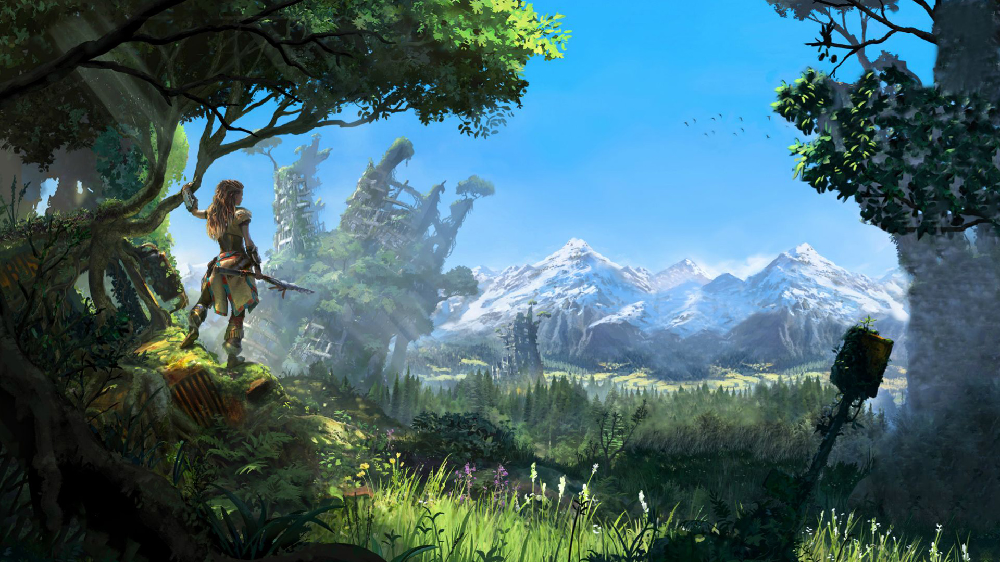

Enjoy all the core PlayStation Plus benefits of online multiplayer, monthly games and more with the PlayStation Plus Essential plan. Take it up a level with a catalog of hundreds of downloadable PS4™ and PS5™ games as part of PlayStation Plus Extra. Or join PlayStation Plus Premium to add classic titles, time-limited game trials and cloud streaming into the mix.

go beyond the horizon
Based on the best seller game called Horizon Zero Dawn, presented by Aura Marcela and Mateo Hernandez